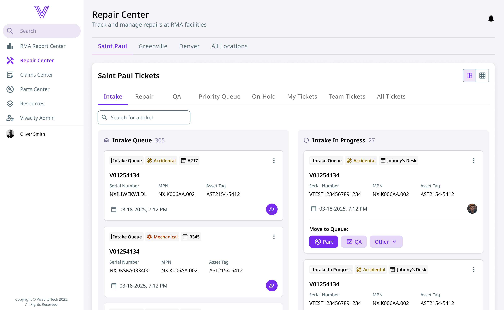
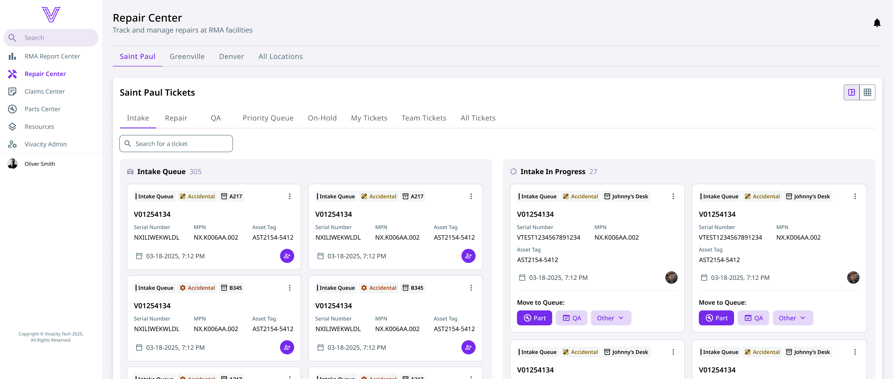
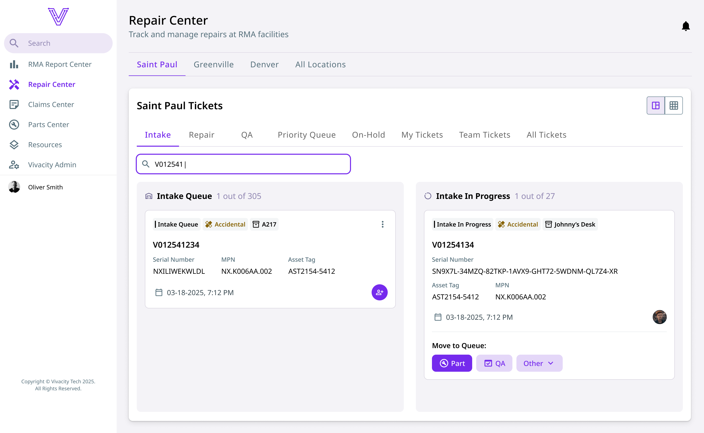
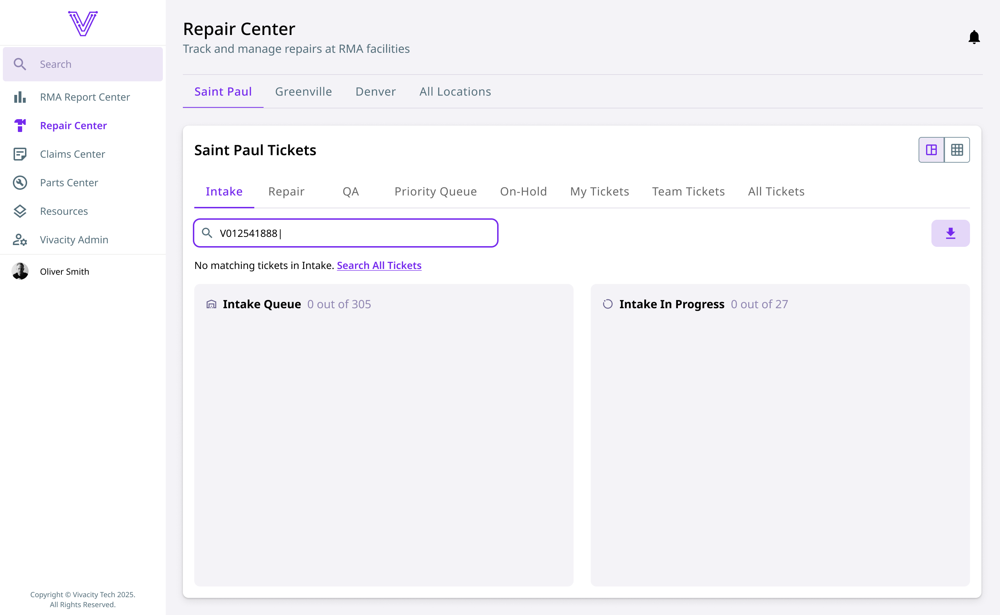
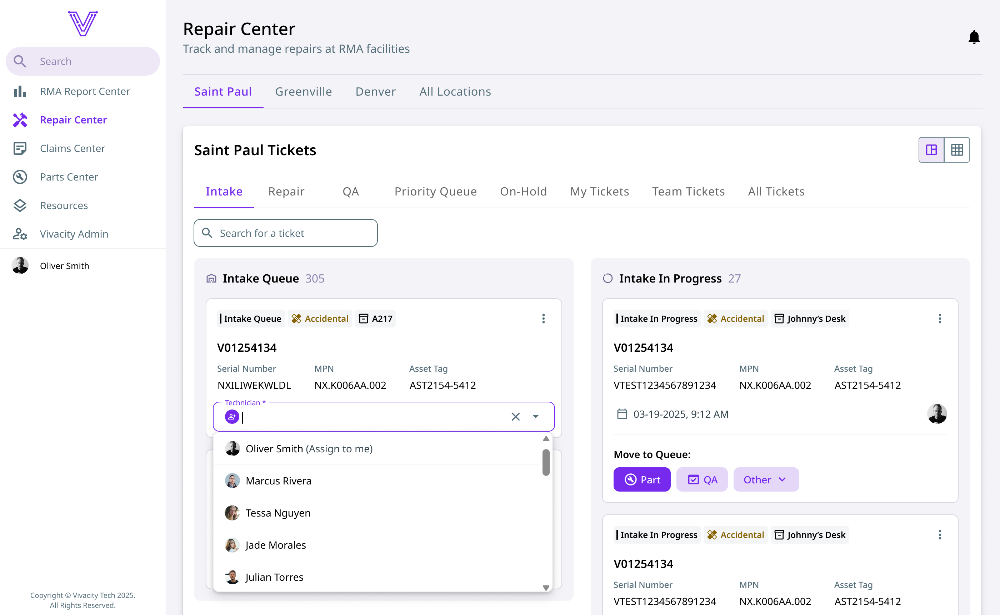
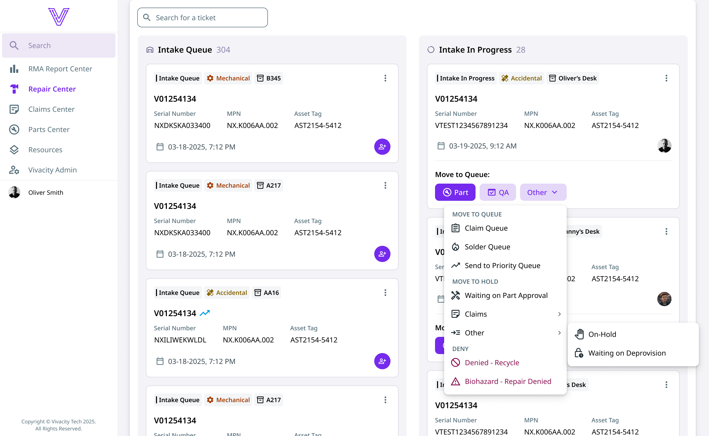
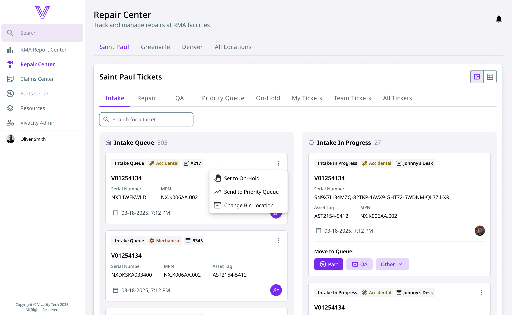

Designing for In-House Users
Dream™ Asset Management is a SaaS platform used by K–12 schools to manage devices, repairs, and inventory. While the platform originally served external users, the software team was tasked with creating an internal section for the company’s own repair technicians. Previously, these technicians used NetSuite to manage repair workflows for student Chromebooks—a system that was functional but costly and cumbersome. Transitioning these workflows into Dream would eliminate NetSuite licensing fees, saving the company tens of thousands of dollars annually.
The success of this transition depended on ensuring the in-house team could perform their tasks just as efficiently, or more efficiently, within Dream. Because technicians rely on precise status tracking and fast task completion, the design needed to simplify complex processes, minimize errors, and make the workflow visually clear and intuitive for both new and experienced users.
Context & Problem
Technicians worked with over twenty possible repair statuses, requiring them to search through long dropdowns and select the correct one each time. This slowed their workflow and increased the risk of selecting the wrong status. The existing interface also lacked visual guidance; users couldn’t easily see where a repair stood in the overall process, which could make onboarding new hires more difficult. Although the primary motivation for moving away from NetSuite was cost savings, these usability challenges presented a strong opportunity to improve the technicians’ daily experience.
Goals
The overall objective of this project was to move techicians into Dream™; however, my main goal was to improve the technicians' experience and reduce cognitive load by:
- Simplifying complex status flows.
- Making the process more visual.
- Improving efficiency, accuracy, and navigation.
Although no formal success metrics were defined, early feedback after implementation suggested that technicians found the new experience significantly easier to use than the previous system.
Design Process
Throughout the design process, I collaborated closely with the lead developer and product owner. Working with the lead developer, we ensured technical feasibility and addressed time-sensitive trade-offs due to licensing expiring in early November. Since the project started in July, we had 4 months to design, receive feedback, iterate, develop, and train in the technicians.
My contribution to the project was creating low-fidelity and high-fidelity designs based on user requirements and expectations. The product owner led user interviews and relayed findings to me through detailed user stories.
I used the user stories to:
- Understand technician needs, reducing the introduction of new pain points.
- Cross-reference them with existing Dream functionality to promote development efficiency.
- Clarify any uncertainties through direct disucssions with the product owner.
In Figma, I created a streamlined, card-based workflow interface that replaced text-heavy tables with reusable visual components. Each card highlighted essential device details—like ticket number, serial number, and assigned technician—while dynamic chips displayed frequently changing information. The bottom of each card featured primary and secondary action buttons arranged by frequency of use, reducing unnecessary clicks and errors. Columns represented each repair status, showing both ticket counts and an at-a-glance view of overall progress. I applied Dream’s design system tokens for consistency and conducted a usability walkthrough via prototype with the technicians, product owner, and lead developer to validate the flow.
Visual Summary
Tap or click the images below to view them full size in a new tab.

Using a workflow card view transforms a complex repair process into a simple visual experience.

Accomodating for multiple screen sizes was necessary as some technicians may use laptops and others may use large monitors.

Showing a breakdown of tickets that match a search improves efficiency by giving the user instant feedback.

A simple message displaying the filtered tab name and a link to check the "All Tickets" tab guides the user to complete their goal.

An icon button opens an input field that allows a technician to be quickly assigned to a ticket, which keeps the process moving efficiently.

Using an “Other” dropdown for additional queue actions keeps the primary status workflow clear while still supporting less-frequent paths.

A kebab menu keeps the core workflow clean and separates queues from additional actions by tucking them away, but still giving the user access within one click.
Outcome
The final design transformed the repair process into a more intuitive, visual experience. Instead of scrolling through dropdowns, technicians could now see where each repair stood and quickly take the most relevant next step. The redesign eliminated much of the unnecessary complexity from the old system, helping users stay focused and reducing onboarding time for new team members.
In summary, the design:
- Translated a complex, text-heavy process into a clear, visual workflow.
- Reduced errors by prioritizing the most common next-step actions.
- Simplified navigation for both new and experienced technicians.
- Maintained consistency with Dream™'s existing design system for seamless integration and the ability to reuse components in the future.
Feedback from the product owner and technicians was overwhelmingly positive. They found the new interface much simpler and appreciated how it guided them through the workflow. For similar projects in the future, I’d like to create a more interactive prototype covering every possible flow, allowing users to explore the design hands-on and provide even deeper feedback before implementation. This could help catch constraints or requirements that I or the team missed before the feature is live.